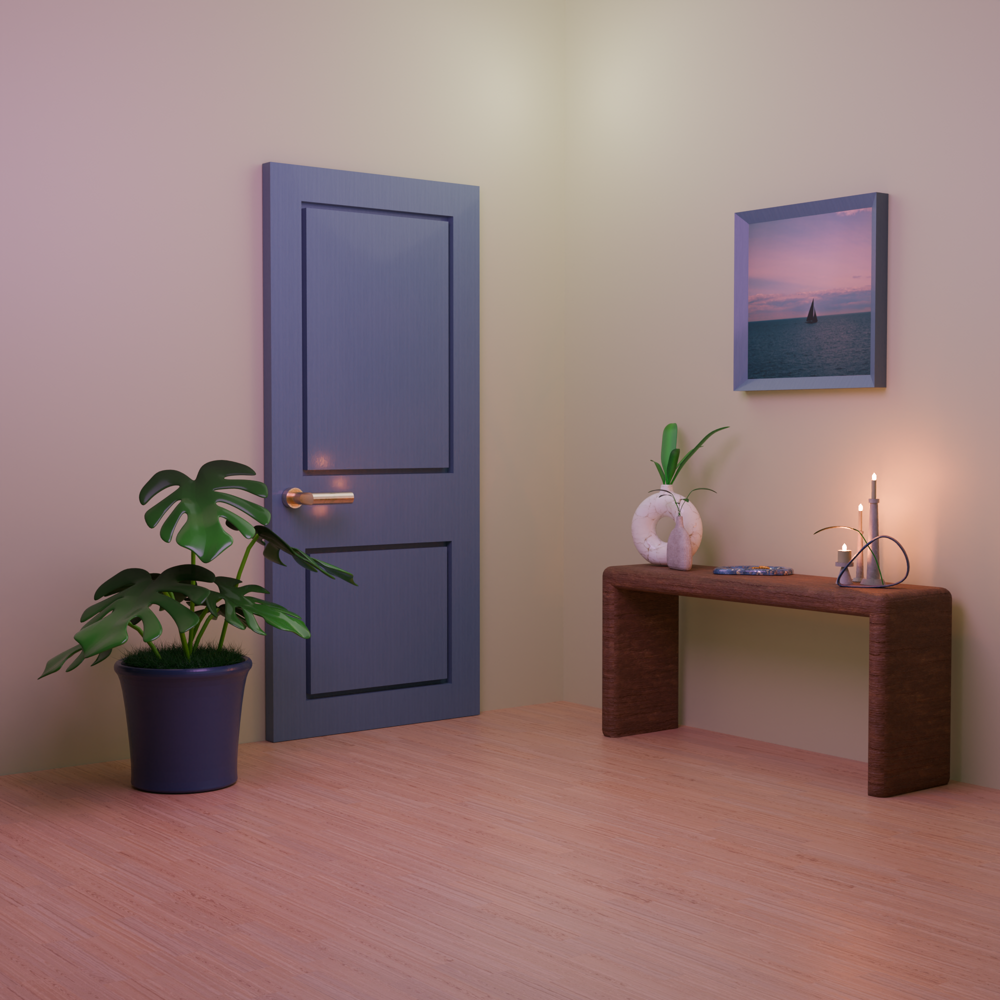
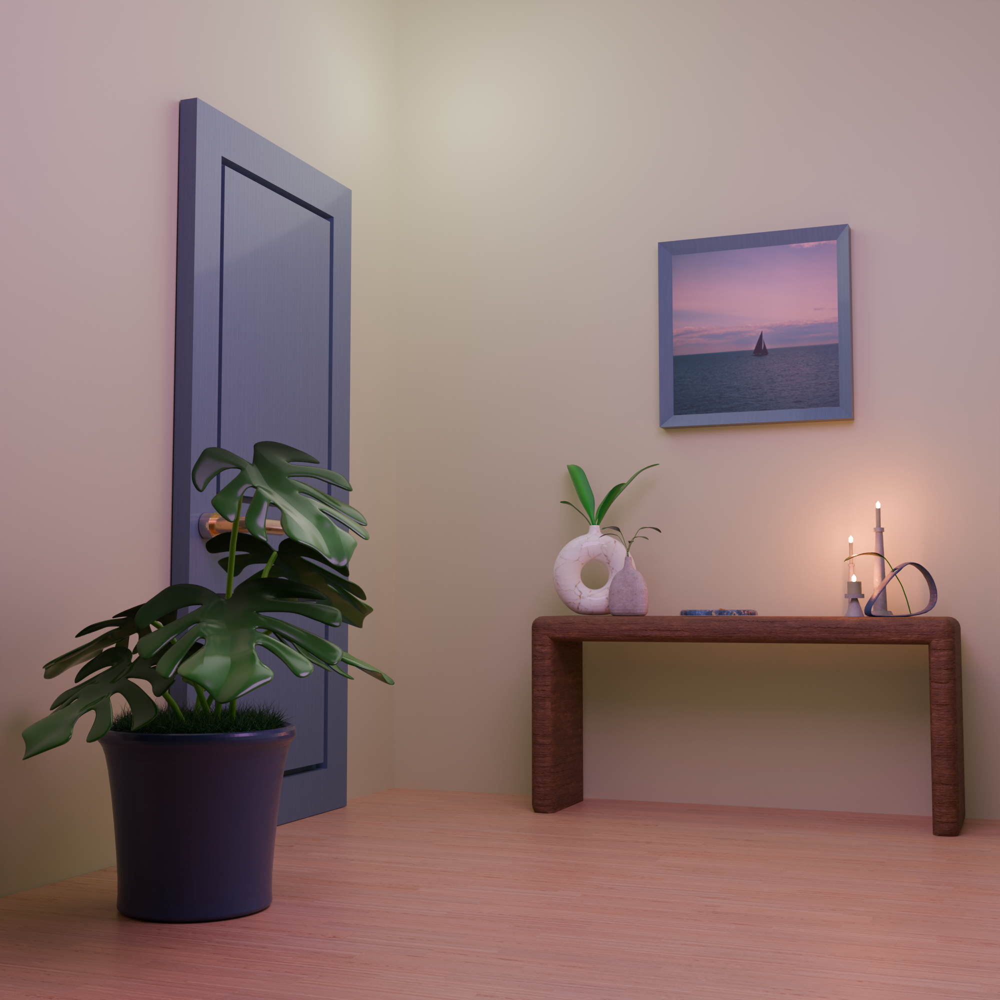
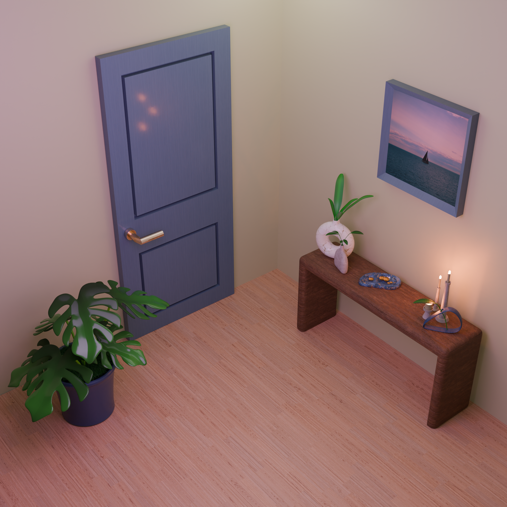
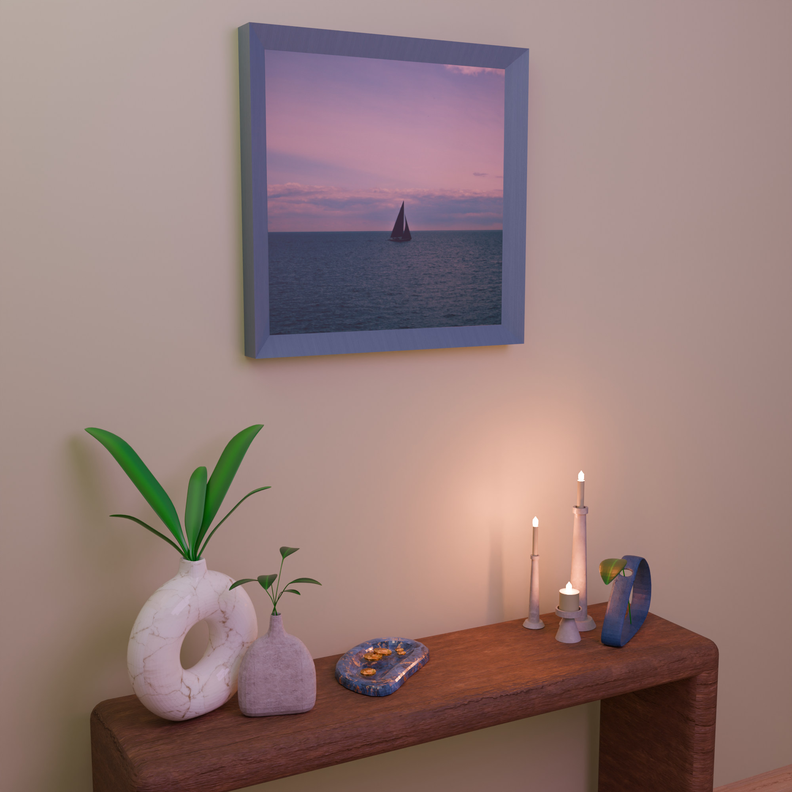
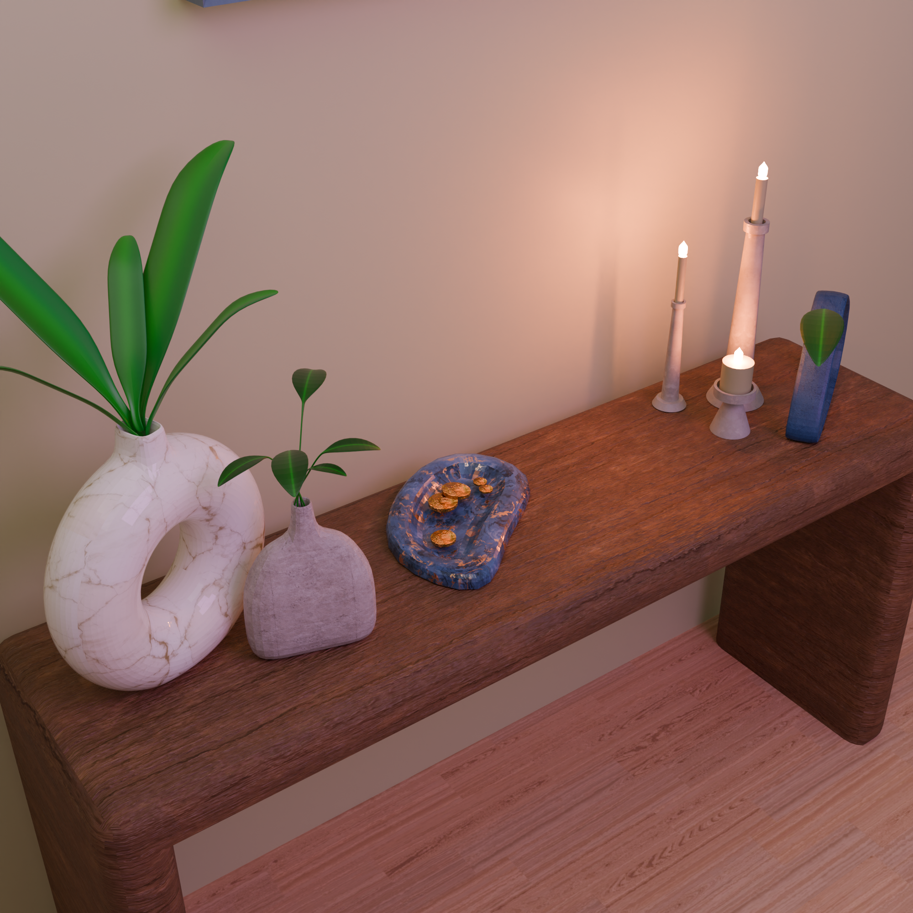

Modelado 3D
Visualización 3D de un espacio interior minimalista realizada en Blender. El proyecto explora la composición, iluminación y materiales para crear una escena cálida y armoniosa, integrando elementos decorativos como mobiliario, plantas y objetos cotidianos.
Se trabajó en el modelado, texturizado y renderizado para lograr una atmósfera realista con énfasis en la luz suave y el equilibrio visual.



